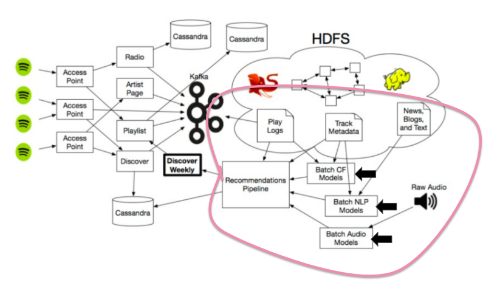

Our motivation for this project was to take all the information that we built on in CS109 and use the Spotify Million Playlists Dataset and the Spotify API to create a playlist extension tool. A user should be able to use the tool to input a playlist and get song suggestions that extend that playlist with similar songs to enjoy, the idea being that they fit in with the playlist.
We did this in a three step process - the first involved loading the dataset and downloading all of the features using the Spotify API (see the EDA for more details). Following this, we implemented a pooling model that pooled the various artist genres that were present, after which we vectorized the different features for every song that we had data for and used a cosine similarity matrix to measure the features against each other. After standardizing these, both models together gave a recommendation of all the possible songs that would extend the playlist.
Spotify currently uses three different algorithms to detect your songs: They first use a collaborative filtering model (think back to when you gave a song a "thumbs-up" on Pandora) to get pool together the likes of different people and create different songs within a specific category. This is called "Collaborative Filtering"
The second type of algorithm is called Natural Language Processing. In a nutshell, Spotify takes a track's metadata and the verbiage around the internet, and assigns a score to each song based on the metadata and how relevant it might be to other songs.
Lastly, they use an audio model. For songs that are up-and coming and new, Spotify will analyze the audio using a CNN and categorize it as based on how close it is to other songs. This means that new songs are able to be discovered.
For more information about these, head on over to Medium for more info.
